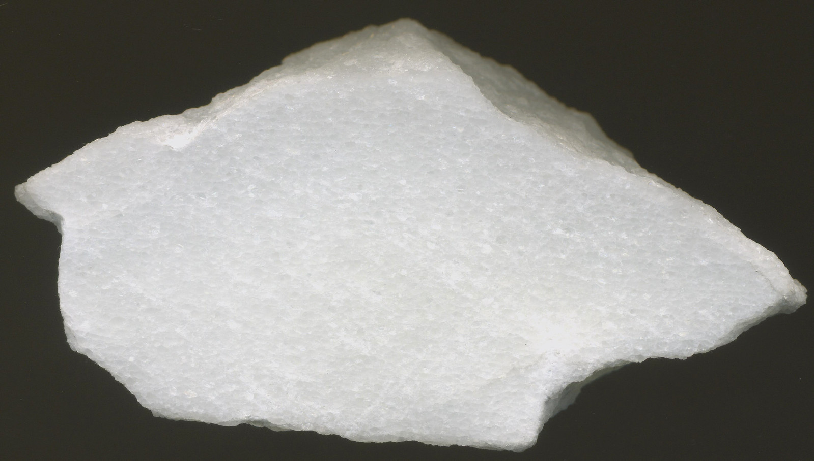

Marble: The Timeless Metamorphic Rock

Chemical Formula: CaCO₃ (Calcium Carbonate)
Color: Primarily White, but also in shades of Black, Green, Red, Pink, Gray, Yellow
Hardness: 3-4 on the Mohs scale
Crystal System: Hexagonal (Trigonal division)
Localities: Italy, Greece, Turkey, India, China, United States
Common Uses: Sculpture, Architecture, Flooring, Decorative Items, Countertops
Marble is a metamorphic rock that forms when limestone is subjected to high pressure and temperature deep within the Earth's crust. Renowned for its elegance and beauty, marble has been a favored material for art and architecture since antiquity. Its fine grain, polishability, and wide variety of colors make it suitable for a range of applications, from intricate sculptures to grandiose buildings.
The word "marble" comes from the Greek word "marmaros," meaning "shining stone," fitting given the rock's ability to take on a high polish. While primarily composed of calcite, marble may also contain minerals such as clay, micas, and quartz, which contribute to its color variations. The purest form of marble is white and has been used in iconic monuments and sculptures, such as Michelangelo's David and the Taj Mahal.
Formation and Types of Marble
Marble forms when limestone undergoes metamorphism, a process where heat and pressure transform the stone's original structure, resulting in the recrystallization of calcite and the creation of dense, interlocking calcite crystals.
White Marble
The purest form of marble, typically white or nearly white, is prized for its simplicity and elegance. Famous varieties include Carrara marble from Italy and Makrana marble from India, used in iconic structures such as the Taj Mahal.
Colored Marble
Colored marbles result from impurities like iron oxide, clay, and bitumen, which give rise to various hues, including:
- Green Marble: Colored by serpentine or silicate minerals.
- Black Marble: A deep dark variant often streaked with white veins.
- Red Marble: Colored by iron oxide or hematite.
- Yellow Marble: Results from limonite or other iron-rich minerals.
Veined Marble
Veined marble displays distinct streaks or patterns created by the presence of mineral inclusions. Notable varieties include:
- Calacatta Marble: Known for dramatic veining and a luxurious appearance.
- Statuario Marble: Another high-quality white marble with bold, thick veins.
Structure and Properties of Marble
Marble’s composition and structure give it several unique properties:
- Crystal Structure: Hexagonal, with calcite crystals growing in an interlocking matrix, giving the stone its distinct texture.
- Hardness: Relatively soft, with a hardness of 3-4 on the Mohs scale, making it ideal for sculpting but less durable for high-traffic flooring.
- Porosity: Marble is porous and prone to staining and damage from acids. Sealants are often used to protect it in applications like countertops.
- Polishability: Marble can be polished to a high gloss, enhancing its natural beauty, making it suitable for decorative uses.
Uses of Marble
Marble has been used for thousands of years in various applications:
1. Architecture
Marble has played a crucial role in architectural history from ancient Greek temples to Renaissance cathedrals. It has been used for facades, floors, columns, and wall cladding. The Pantheon in Rome, the Lincoln Memorial, and the Palace of Versailles all feature marble prominently.
2. Sculpture
Because of its fine grain and softness, marble is a favored material for sculptors. Many of the greatest works of art, including Michelangelo’s David and Venus de Milo, are carved from marble chosen for its ability to hold fine details and take on a smooth finish.
3. Flooring and Wall Cladding
Marble’s natural beauty makes it a popular choice for luxury flooring and wall coverings in high-end homes and public buildings. Marble tiles are often used in bathrooms, foyers, and kitchens, though they require careful maintenance due to their susceptibility to scratches and stains.
4. Countertops
Marble countertops are a statement of elegance, often used in kitchens and bathrooms. Despite their beauty, they must be treated with care as they can stain and etch from acidic substances such as lemon juice or vinegar.
5. Decorative Objects
Beyond architecture and art, marble is also used in smaller decorative items like vases, clocks, and tabletops. These items capitalize on marble’s luxurious appearance and are often used in interior design.
History of Marble
Marble’s history spans thousands of years, and its use has been associated with power, beauty, and permanence. Some of the most important moments in the history of marble include:
Ancient Greece and Rome
Both the Greeks and Romans used marble extensively in their buildings and sculptures. The Parthenon and Temple of Zeus are just two examples of ancient Greek structures adorned with marble. Roman architecture also made significant use of marble in public buildings and private villas.
The Renaissance
During the Renaissance, marble experienced a revival as a favored material for sculpture and architecture. Artists such as Michelangelo, Donatello, and Bernini worked almost exclusively in marble for their sculptures. Buildings like St. Peter’s Basilica in Vatican City also showcase marble's widespread use during this period.
Modern Times
Today, marble remains a symbol of luxury and status. It is frequently used in high-end residential and commercial projects. With advances in quarrying and processing, marble is more accessible than ever, although premium varieties like Carrara still command a high price.
Famous Varieties of Marble
1. Carrara Marble
Perhaps the most famous marble variety, Carrara marble comes from Tuscany in Italy. Known for its pure white or light gray color and fine grain, it has been used in both classical and Renaissance art and architecture. Michelangelo’s David was carved from a block of Carrara marble.
2. Calacatta Marble
This Italian marble is distinguished by its bold veining, which can range from gray to gold. It is a high-end variety often used in luxury interiors and high-profile architectural projects.
3. Makrana Marble
This white marble from India was famously used in the construction of the Taj Mahal. It is highly valued for its durability and beautiful fine grain.
4. Yule Marble
Found in Colorado, USA, Yule Marble was used in the construction of the Lincoln Memorial. It is known for its uniform white color and fine texture.
Marble Quarrying and Mining
Marble is sourced from quarries around the world, with each region producing stones with unique characteristics. The quarrying process involves extracting large blocks of marble from the earth, which are then cut and shaped into slabs or smaller pieces.
Notable Quarrying Locations:
- Italy: The Carrara quarries in Tuscany have produced marble for thousands of years, including the stone used by Michelangelo.
- India: Makrana marble quarries have supplied the stone for some of the most famous buildings in the world.
- Turkey: Turkey is a leading exporter of marble, with quarries producing both white and colored varieties.
- Greece: Pentelic marble from Greece was used in ancient monuments such as the Parthenon.
Extraction Techniques
Modern quarrying techniques often involve diamond wire cutting, which allows for precise extraction of marble blocks with minimal waste. Historically, however, quarrying was done with simple hand tools, making the process labor-intensive and slow.
Enhancement of Marble
Marble may undergo several treatments to enhance its appearance or durability:
- Polishing: Polishing gives marble its characteristic high-gloss finish, enhancing the stone’s color and natural veining.
- Sealing: Because marble is porous, sealing it helps protect it from stains and damage. Sealants are often applied to countertops and flooring.
- Resin Treatment: Cracks or imperfections in marble can be filled with resin, improving the stone's appearance and structural integrity.
Caring for Marble
Marble requires careful maintenance to keep its beauty intact:
- Cleaning: Use a mild pH-neutral cleaner to avoid etching the marble surface. Acidic cleaners like vinegar can damage marble.
- Sealing: Regularly applying a sealant to marble surfaces helps protect them from staining, particularly in high-traffic areas or kitchens.
- Polishing: Over time, marble may lose its shine. Professional polishing can restore its luster.
Environmental Concerns
Marble quarrying and processing can have significant environmental impacts. The extraction process involves the removal of large quantities of stone, leading to landscape disruption. Processing marble, particularly polishing and cutting, also generates dust and waste. Sustainable quarrying practices are becoming more common, with efforts to reduce the environmental footprint of marble production.